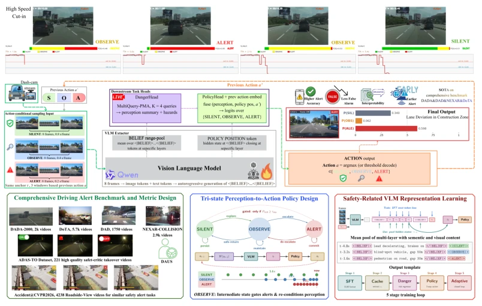
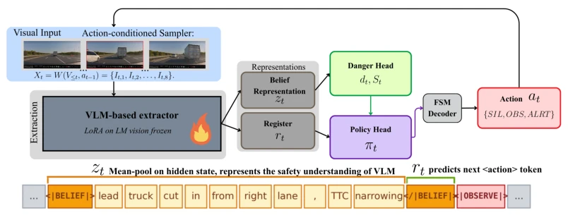
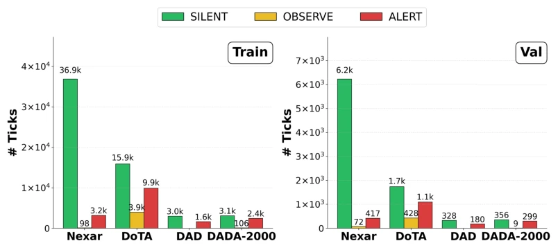
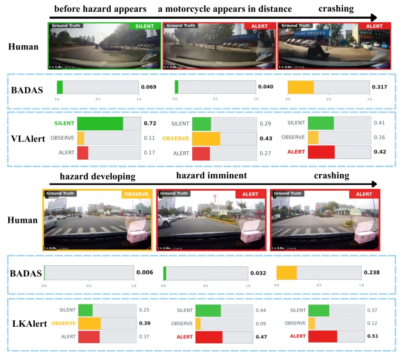
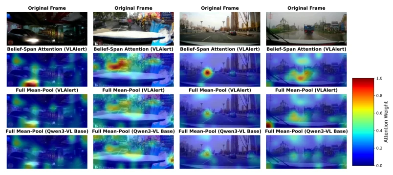
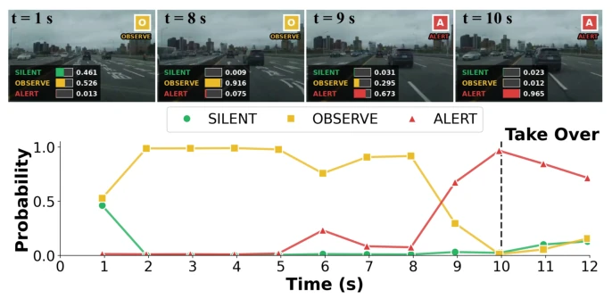
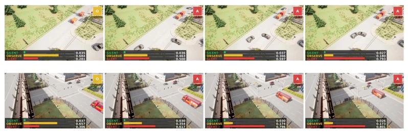
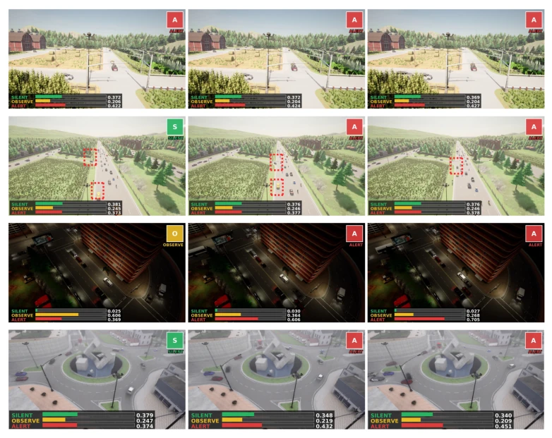

This paper adds a "thinking" stage to autonomous driving warning systems. Traditional models are like security guards who only know how to honk, alarming regardless of the circumstances; VLALERT, however, is like an experienced traffic cop, who first "OBSERVES" (OBSERVE) if evidence is insufficient, and then "ALERTS" (ALERT) once enough is gathered. Although it employs a large model such as Qwen3-VL-4B, the inference cost is certainly not low, but the DAUS metric indeed better understands deployment pain points than pure AUROC. However, will the OBSERVE action increase latency and cause missing the optimal braking opportunity? The paper does not detail real-time performance. Additionally, mixing four datasets for the benchmark, noise control in data cleaning is a black box. Overall, the idea is very compelling, but implementation depends on latency. This mechanism of dynamically adjusting the observation window is essentially trading computation for safety, which is worthy of affirmation.
Existing driving warning systems mostly output binary risk scores or scalars, relying on threshold processing for ambiguous scenarios [24, 25]. This leads to either false alarms disturbing the public, or missed warnings of danger. Although VLMs can describe accident causes [16, 17], they lack temporal decision mechanisms. Drivers need to know "when" to warn, not just "if" it is dangerous. Existing evaluations mostly focus on accident prediction ranking, ignoring false alarm burden and human takeover behavior [22, 23]. Therefore, a strategy is needed that can adaptively adjust the observation window based on evidence sufficiency, rather than static thresholds. Especially in partially observable environments, the system must learn to delay decisions when information is insufficient, avoiding blind triggering.
VLALERT models the warning as a partially observable sequential decision problem. The core is a ternary action strategy: SILENT (Silent), OBSERVE (Observe), ALERT (Alert). The system uses Qwen3-VL-4B as a safety evidence generator, fine-tuned via LoRA, outputting a structured BELIEF span. The key innovation lies in the action-conditioned sampler: after SILENT, a wide sparse window is used; after OBSERVE, a medium dual-resolution window is used; after ALERT, a dense short window is used. Belief state is obtained by pooling hidden states within the BELIEF span, rather than free text. DangerHead estimates visual risk, PolicyHead predicts actions. Training is divided into three stages: Belief format SFT, downstream head training, closed-loop fine-tuning. In closed-loop training, the action sampler is activated during training, simulating the adaptive distribution during inference. Additionally, a unified benchmark VLALERT-Bench was constructed, integrating four real-world dashcam datasets, and the DAUS metric was introduced to measure deployment utility.

Figure 1: Overview of VLALERT. problem that requires interpreting evolving traffic context and determining when the evidence is sufficient to warn [12, 13, 14, 15].

Figure 2: Architecture of VLALERT. VLALERT extracts belief representations from ego-view video with a VLM and predicts a tri-policy over {SILENT, OBSERV E, ALERT}.

Figure 7: VLALERT-Bench class distribution. Per-source tick counts for train and validation after applying the label rule and post-event filtering. Bars show absolute tick counts for SILENT, OBSERVE, and ALERT.
On VLALERT-Bench (including Nexar, DoTA, etc.), VLALERT's DAUS reached 0.4878, outperforming Open-BADAS's 0.4752. In the ADAS-TO-Critic takeover test, R@5s improved from 74.2% to 88.7%. Ablation studies show that structured BELIEF pooling is more effective than random spans, and retaining the OBSERVE action is superior to merging it into binary classification. In the CARLA roadside view test, the model also generalizes effectively, proving it does not rely on a single view. This validates the robustness of VLM representations in cross-domain scenarios.

Figure 3: Performance comparison of VLALERT and Open-BADAS.

Figure 4: Comparing attention of the adaptive BELIEF-span and the default VLM output using mean-pool: Results show that BELIEF-span sees the whole scene with right focus on driving risk visual cues.

Figure 5: Example prediction on ADAS-TO-Critic. Top: selected frames with predicted action and class probabilities. Bottom: 1 Hz probability trace over time; the dashed line marks the human takeover at t = 10 s.

Figure 6: Roadside CARLA accident example. A fixed roadside camera captures an unprotected left-turn collision. VLALERT escalates from OBSERVE to ALERT before impact and sustains the alert, while Gemini remains in SILENT.

Figure 8: VLAlert performance on roadside Carla accident dataset.